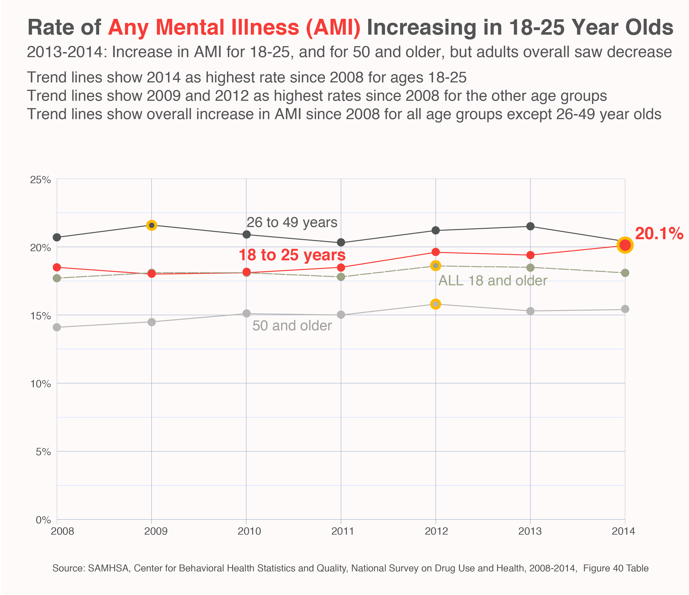
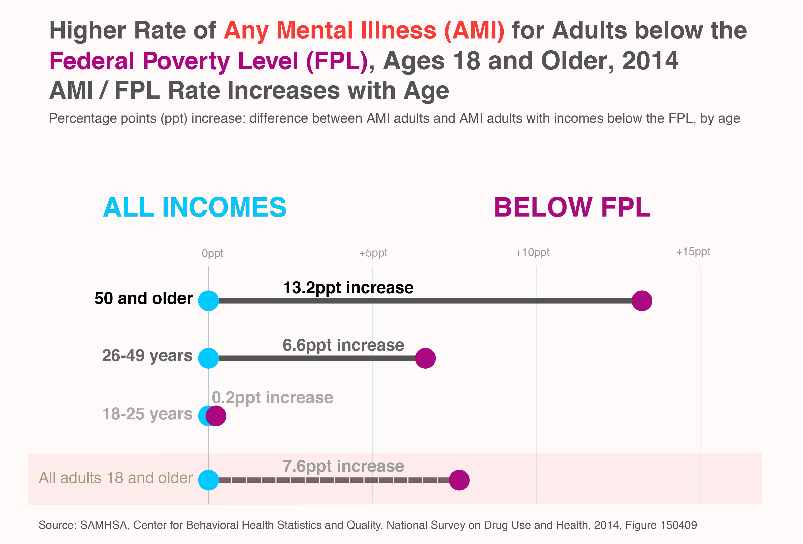
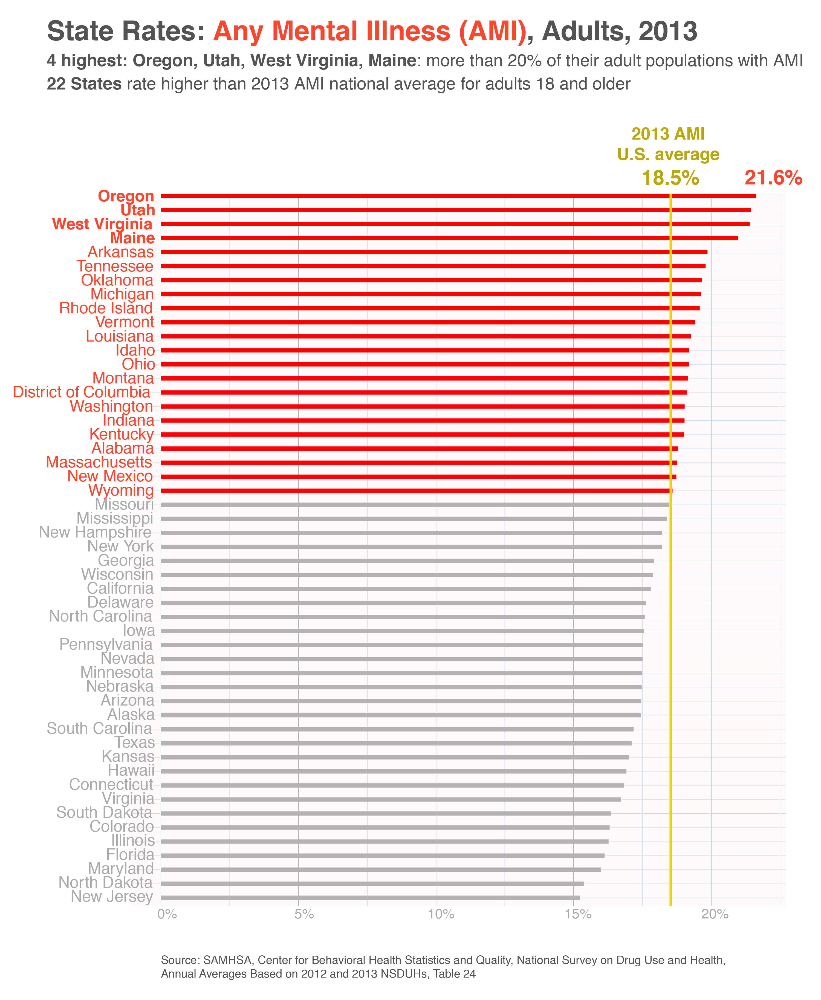

Mental Health Data Visualization Charts
by Clare Churchouse
posted December 14, 2015
These charts use data from the 2014 National Survey on Drug Use and Health (NSDUH) which was published in September 2015. The report, entitled'Behavioral Health Trends in the United States: Results from the 2014 National Survey on Drug Use and Health', Substance Abuse and Mental Health Services Administration (SAMHSA), details behavioral health trends in the noninstitutionalized population of the United States from the past year. It provides detailed national and state data on behavioral health trends: mental health and tobacco, alcohol, and illicit drug use (including non-medical use of prescription drugs)
In 2014 the rate of 'any mental illness' for adults 18 years and older was 18.1% (or 43.6 million) which is nearly one in five adults. AMI is defined as having any mental, behavioral, or emotional disorder in the past year that met DSM-IV criteria (excluding developmental disorders and SUDs). 'Serious mental illness' (SMI) is a category of AMI and is defined as AMI adults who have had any mental, behavioral, or emotional disorder that substantially interfered with or limited one or more major life activities. Since the NSDUH survey does not cover institutions (such as prisons, nursing homes, mental institutions, military personnel on active duty), and does not cover those with no fixed address (the homeless who are not in shelters), it may be that the mental health statistical data is somewhat lower than if all populations were surveyed. Note though that the survey does interview residents of households and individuals in non-institutional group quarters including halfway houses, homeless shelters, college dormitories, and migratory workers’ camps.
Behavioral health covers the full range of mental and emotional wellbeing – from coping with day-to-day challenges of life, to the treatment of serious mental illnesses, and substance use disorder and other addictive behaviors. Behavioral health is getting more attention since the Affordable Care Act (ACA) instigated changes in the way that health care is delivered, paid for and monitored. In the ACA, it is stipulated that all plans must cover:
• Behavioral health treatment, such as psychotherapy and counseling
• Mental and behavioral health inpatient services
• Substance use disorder (commonly known as substance abuse) treatment.
There are three categories of mental illness severity and they are based on the level of functional impairment: mild, moderate and serious. The chart displays the number of 'any mental illness' (AMI), and within that the number who have a 'serious mental illness' (SMI), and the overlap of AMI and SMI with 'Substance Use Disorders' (SUDs) in the general population. Note that AMI numbers as reported by NSDUH do not include developmental or substance use disorder.

For any 100 adults, more than 18 (18.1%) had any mental illness (AMI) in the past year. For any 100 adults, more than 4 (4.1%) are in the third AMI category: serious mental illness (SMI). For any 100 adults, more than 3 (or 3.3%) have a co-occurring AMI and substance use disorder (SUD) (including SMI). For any 100 adults, 1 (or 1%) have a co-occurring SMI and SUD.
What is the age breakdown of AMI and SMI?


Does income below the Federal Poverty Level correlate with higher or lower rates of AMI and SMI?


Are AMI rates the same across states or do certain states see higher rates of AMI?

The link to the survey report is NSDUH report